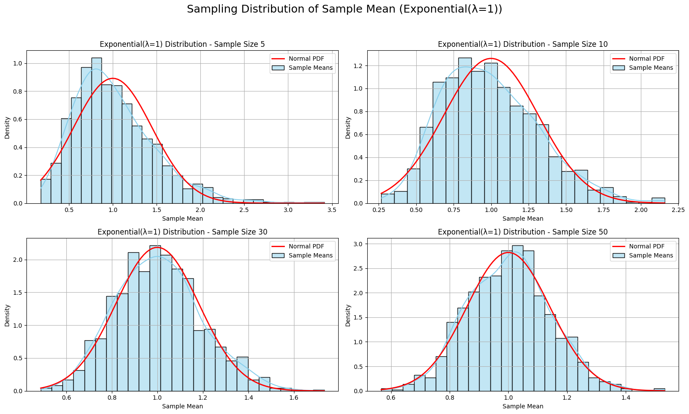

Problem 1
Here's an updated, detailed, and polished version of your Statistics Project combining the Central Limit Theorem (CLT) and Pi Simulation problems. This version includes definitions, visualizations, convergence analysis, and structure for a high-quality report or notebook.
üßÆ Statistics Project: CLT & Pi Simulation
üìò Part 1: Exploring the Central Limit Theorem (CLT) through Simulations
üîç Objective
To visually and computationally explore the Central Limit Theorem using simulations from various probability distributions and demonstrate how the sample mean converges to a normal distribution as sample size increases.
üìñ Definitions
-
Central Limit Theorem (CLT): States that, for a sufficiently large sample size, the distribution of the sample mean of any independent, identically distributed (i.i.d.) random variables approaches a normal distribution, regardless of the original population’s distribution.
-
Sample Mean (\(\bar{X}\)):
$$ \bar{X} = \frac{1}{n} \sum_{i=1}^n X_i $$
The average value from a random sample of \(n\) observations.
- Population Distribution: The original distribution from which we draw samples (e.g., Uniform, Exponential, Binomial).
⚙️ Methodology
- Choose three distributions: Uniform, Exponential, Binomial
- For each, simulate the population with 100,000 data points.
- Randomly draw multiple samples of size \(n = 5, 10, 30, 50\)
- Repeat 1000 times for each sample size and distribution
- Plot histograms of the sample means
- Overlay a normal distribution curve for comparison
- Analyze convergence visually and quantitatively
üìä Code with Visualizations and Definitions
import numpy as np
import matplotlib.pyplot as plt
import seaborn as sns
from scipy.stats import norm
def plot_sampling_distribution(dist_name, sample_means, mu, sigma, n):
sns.histplot(sample_means, kde=True, stat="density", color="skyblue", label="Sample Means")
x = np.linspace(min(sample_means), max(sample_means), 100)
plt.plot(x, norm.pdf(x, mu, sigma/np.sqrt(n)), color='red', lw=2, label="Normal PDF")
plt.title(f'{dist_name} Distribution - Sample Size {n}')
plt.xlabel('Sample Mean')
plt.ylabel('Density')
plt.legend()
plt.grid(True)
def simulate_clt(pop_func, args, label, true_mu, true_sigma):
sample_sizes = [5, 10, 30, 50]
plt.figure(figsize=(16, 10))
plt.suptitle(f'Sampling Distribution of Sample Mean ({label})', fontsize=18)
for i, n in enumerate(sample_sizes):
means = [np.mean(pop_func(*args, n)) for _ in range(1000)]
plt.subplot(2, 2, i + 1)
plot_sampling_distribution(label, means, true_mu, true_sigma, n)
plt.tight_layout(rect=[0, 0.03, 1, 0.95])
plt.show()
# Uniform [0,1]
simulate_clt(np.random.uniform, (0, 1), 'Uniform[0,1]', 0.5, np.sqrt(1/12))
# Exponential (λ=1)
simulate_clt(np.random.exponential, (1,), 'Exponential(λ=1)', 1.0, 1.0)
# Binomial (n=10, p=0.5)
simulate_clt(np.random.binomial, (10, 0.5), 'Binomial(n=10, p=0.5)', 5.0, np.sqrt(10*0.5*0.5))

ü߆ Analysis
- Uniform Distribution: Converges quickly due to symmetry and finite bounds.
- Exponential Distribution: Skewed and unbounded—requires larger \(n\) for normality to emerge.
- Binomial Distribution: Discrete but symmetric here—converges moderately well.
✅ Observation: As sample size increases, histograms become more bell-shaped and closer to the red normal curve, confirming the CLT.
üåç Real-World Applications of CLT
- Surveys: Estimating population averages from samples
- Manufacturing: Analyzing sample means in quality control
- Finance: Modeling returns aggregated over time intervals